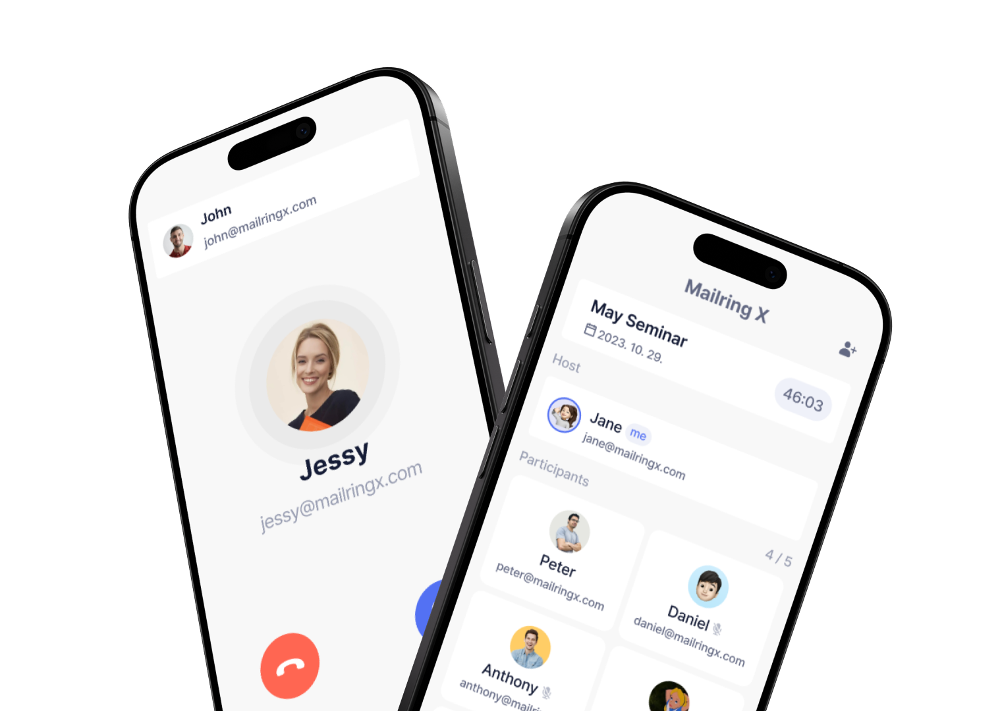
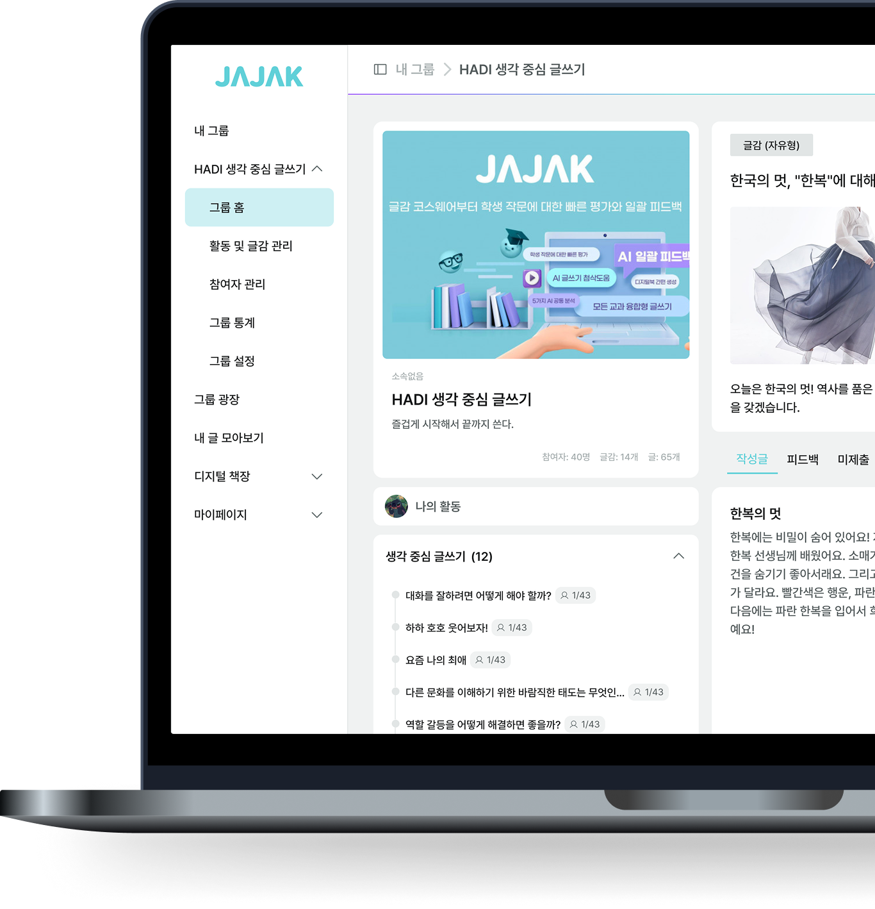
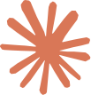
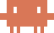
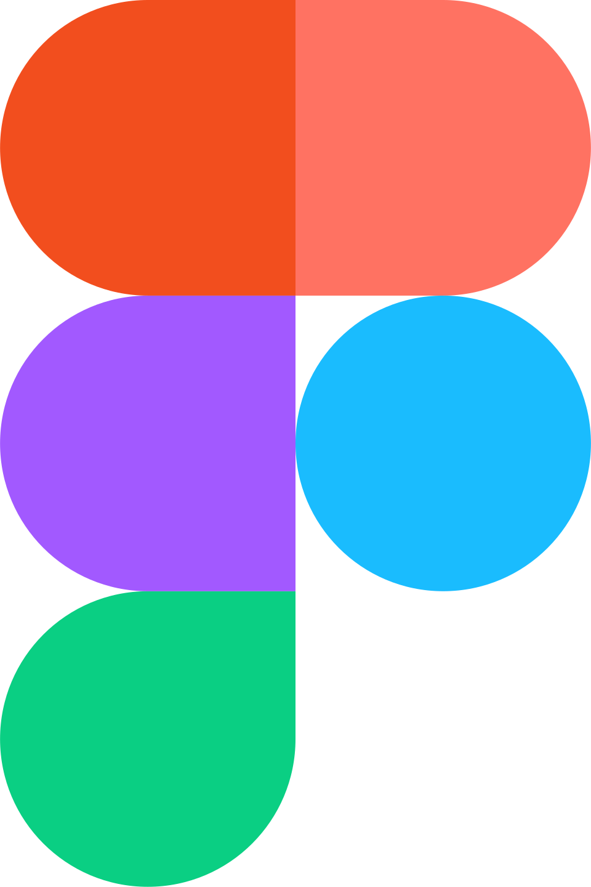
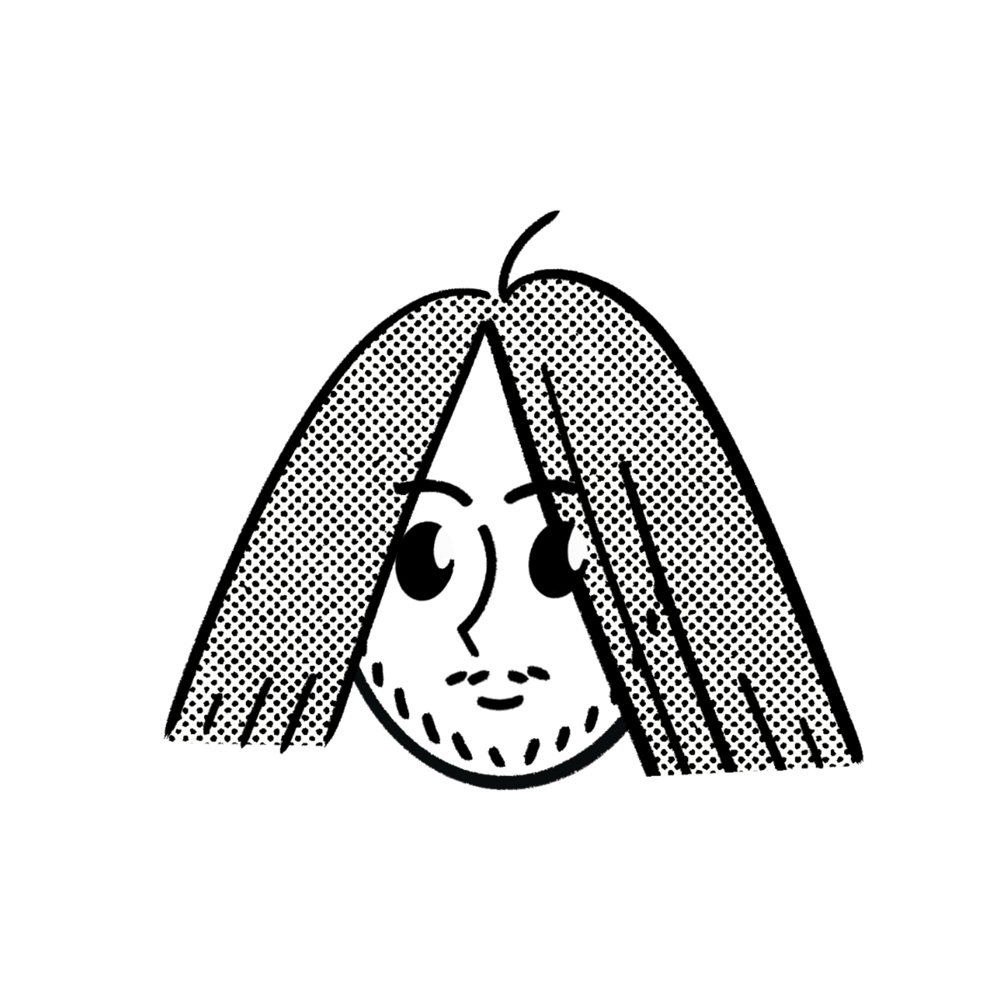
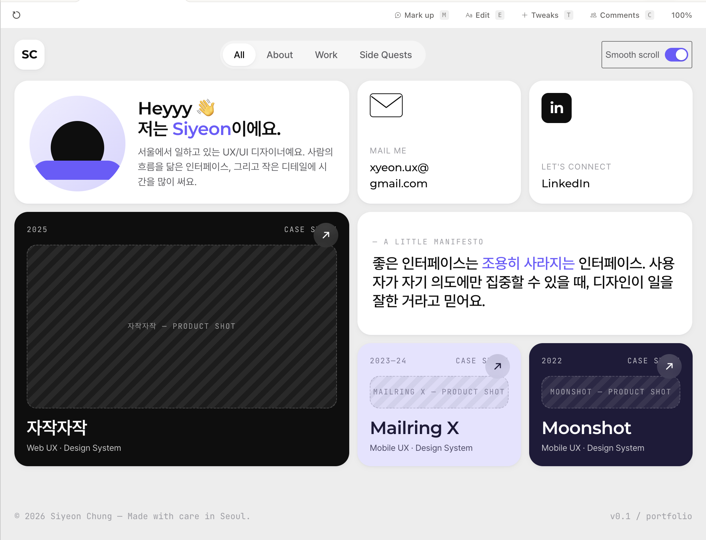
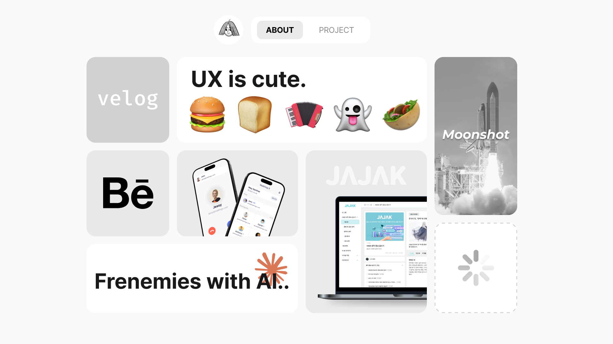
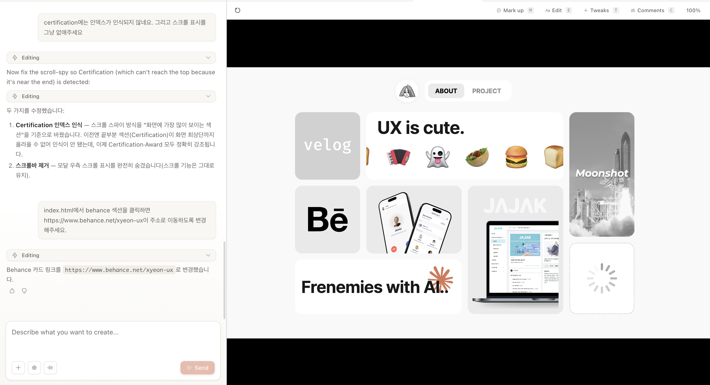

UX는 귀엽다.
UX 디자인을 접했을 때 '케밥 메뉴', '햄버거 메뉴', '와플 메뉴'처럼 음식 이름을 표준 용어로 사용하는 점이 논리와 엄밀함을 요구하는 분야에서 귀엽다고 생각했습니다.
그리고 이 귀여운 이름들이 UX의 본질, 즉 복잡한 것을 누구나 쉽고 직관적으로 전달하려는 태도를 그대로 담고 있다는 것을 깨달았습니다. 엄밀함을 추구하면서도 사람을 먼저 생각하는 그 점에 이끌려 UX 디자인을 시작하게 되었고, 이처럼 간단 명료하고 위트 있는 디자인을 지향합니다.
(주)팀플백 SW개발팀 UXUI 디자이너
2025. 01 ~ 2025. 09 (9개월)
[ `자작자작` AI 글쓰기 교육 플랫폼 UX 개선]
1. 서비스 디자인 개선 및 표준화
2. 설계 및 기술 문서화 (Technical Documentation)
3. 브랜드 마케팅
(주)옴니스토리 연구개발팀 UXUI 디자이너
2023. 11 ~ 2024. 12 (1년 1개월)
[ `Mailring X` 이메일 기반 글로벌 전화 서비스 0→1 구축]
1. 모바일 앱(iOS/Android) 디자인
2. 운영 효율화를 위한 백오피스 설계
3. 서비스 아이덴티티 확립 — 로고(BI) 디자인 및 그래픽 시스템 수립
빠르고 넓게 훑는 역할입니다. 자료를 모아오고, 아이디어의 방향이 맞는지 초기 검증하는 데 활용합니다.
아이디어 구조화, UX writing 추천, 수작업 디자인 피드백, 기능 명세서/QA 시트 초안까지 기획의 전 과정에서 활용합니다.

디자인 툴 밖의 워크플로우입니다. 로컬 파일 정리, 리서치 자료 분석 등 반복되는 작업을 자동화합니다.

AI가 초안을 잡아주면, 저는 그것을 바탕으로 방향을 판단하고 발전시킵니다. 빈 캔버스에서 고민하지 않고, AI를 출발점으로 활용하여 빠르게 작업에 착수, 진행이 가능해졌습니다.
제가 컨셉과 방향을 찾아서 제시하고, 이미지 생성은 미드저니에게 맡깁니다. 3D,2D 등 여러 스타일의 홍보 이미지를 프롬프트로 디렉팅하여 만들어냅니다.
완성한 디자인을 개발로 구현합니다. Cursor로 구현한 코드 파일을 Claude Code에게 파악시켜 에셋 정리 등 자동화를 구현합니다.
이 웹사이트를 AI와 함께 만든 과정입니다. 아이디어를 제안하고, 시안을 받아 실제 그리드 구현 느낌을 살피고, 디자인을 진행하여 HTML로 구현을 요청했습니다. 코드 구현 후 인터랙션은 대화를 통해 쉽게 조정하여 프로토타이핑 과정을 줄일 수 있었습니다.




불필요한 인사말(안녕, 고마워 등), 중복 설명, 과도한 배경 정보를 줄이고, 원하는 응답 형태(형식, 길이, 범위)를 구체적으로 지시한다. "3줄 이내로", "코드만, 설명 제외" 같은 지시가 효율적으로 응답을 도출할 수 있다.
→ 설정에서 응답 형태 지정 가능
프로젝트를 생성해서 대화를 저장하여 맥락을 유지하며 새로운 채팅을 활용하며, 새 주제엔 새 대화창을 열되, 맥락이 필요할 땐 압축해서 이전한다.
→ 아래 맥락 관리 3가지 방법 참고
대화 마무리 시 "다음 작업에 필요한 정보만 50단어로 정리해줘"라고 요청 → 일상 대화나 실패한 시도는 제외하도록 명시하는 것이 중요!
자주 쓰는 프로젝트 배경(기술 스택, 목표, 선호 스타일)을 메모장에 저장해두고 새 대화 시작 시 붙여넣는다.
목표 / 현재 상태 / 막힌 부분, 이 세 가지를 본인이 직접 생각하고 정리하는 시간을 가진다.